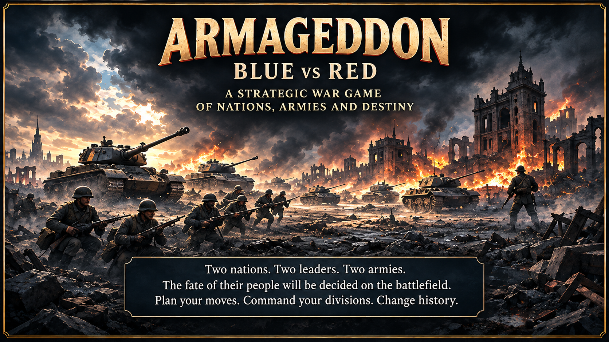

Verifying registered GameTopia account…
Your account and permanent player ID are required before the backstory.
Log in or switch account

← Back
1 of 3
Options ▾
♫ Music: Off
Music off — select On to play